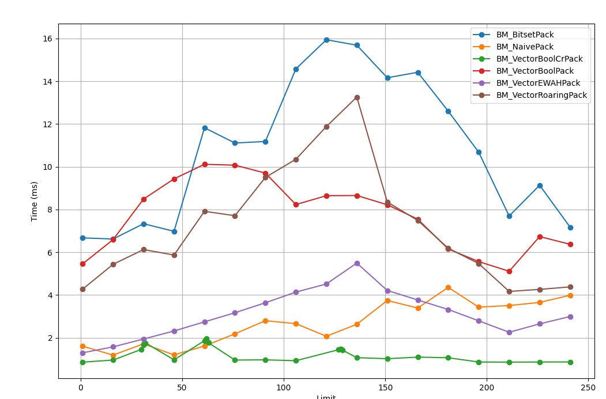
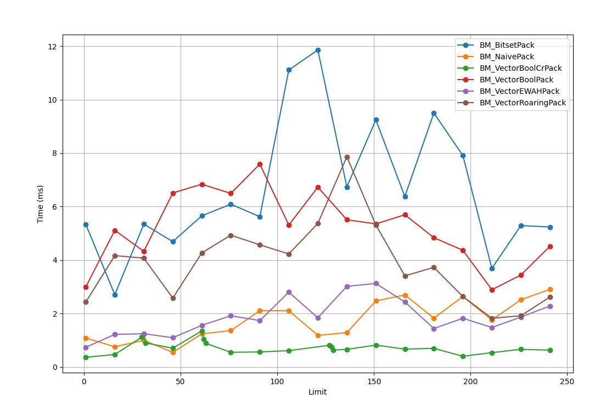
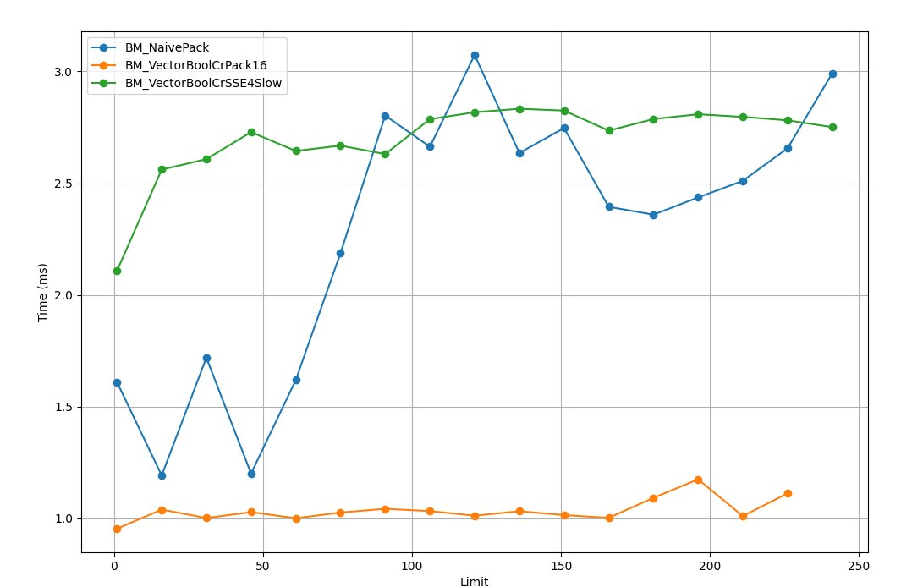
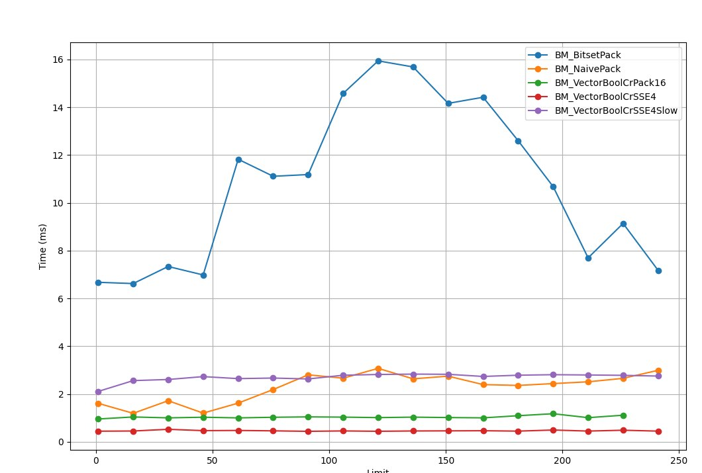

В играх часто используется паттерн упаковки булевых значений в биты. Это удобно для оптимизации памяти и ускорения выполнения массовых проверок. Например, такие проверки могут включать нахождение игрока в тайле, определение доступности клеток на четырёх- или шестигранной сетке или другие пространственные проверки, которые необходимо выполнять быстро. Это не ракетостроение, но когда профайлер показал одну из таких функций в числе горячих, мне стало интересно, как именно она работает и можно ли её оптимизировать. Структура данных bitset — это способ эффективно представлять множество целых индексов, которое к тому же поддерживает различные операции над ним, например объединение, разность, пересечение.
Итак, каждый юнит может занимать один или несколько тайлов, особенно если это большой юнит вроде колесницы или требушета, и мы хотим создать производную карту, которая хранит другие признаки, например: есть ли в тайле юнит, или фильтр по здоровью юнитов. Такие карты используются для разных быстрых проверок, вроде такой: можно ли переместиться в точку, или каких юнитов имеет смысл атаковать.
Для представления данных мы можем использовать индекс юнита в тайле. В качестве типовой задачи проверять будем только юнитов, у которых здоровье превышает определённое значение. Это условие не взято с потолка. Например, некоторые юниты используют стратегии вроде «убей слабейшего» или «нападай стаей». Для таких стратегий поюнитный обход всех юнитов вокруг (особенно если это выполняют все юниты в группе) может стать крайне затратной по времени операцией.
Название статьи получилось как-то само собой: недалеко от моего дома есть хорошее кафе Chief&Bites, достаточно популярное у местных жителей, но пирожные там начинают делать после заказа — такой вот формат анти-кафе. Сами понимаете, прождать, пока сделают свежайшее пирожное, полчаса, а то и час — легко, там даже на чеке пишут время, когда начали делать именно твоё пирожное. Заранее извиняюсь за возможные «велосипеды» в коде, но, возможно, эта тема покажется кому-то полезной.
Пока вы не задумываетесь об упаковке булевых значений, они вас не беспокоят. А меня на эту тему натолкнули QA, которые прислали довольно странные репорты, что на некоторых картах с бенчмарками тесты ловят микрофризы при передвижении юнитов: глазами вы этого не увидите, но будет неприятное ощущение, что игра «плавает», хотя fps держится высокий. И проявлялось это только на определённых размерах карт и при определённых условиях, об этом чуть позже.
Вернёмся к нашему алгоритму, который выглядит в самом простом виде как-то так:
длина массива: N
unitExist[x][y] = !!(unitHealth[x][y] > limit)
for i = 0...N-1
byte = pack(!!(unitHealth[i] > limit),
!!(unitHealth[i+1] > limit)
...,
!!(unitHealth[i+7] > limit))
output[i/8] = byte
i += 8И при использовании битовой упаковки позволяют ещё и сэкономить памяти, так было в изначальной задумке.
256 x 256 * 1 (byte/health) = 65536 (bytes) = 64kb
64kb/8 = 8192 (bytes) = 8kbОпишу только часть, связанную с «упаковкой». Для работы с такими значениями требуются другие алгоритмы, и иногда эта дополнительная работа может существенно замедлить весь процесс. Эта проблема похожа на алгоритмы сжатия, хотя упаковка, как правило, гораздо более быстрый процесс. Сейчас конфликт между объёмом памяти и вычислительной мощностью не стоит так остро, как, скажем, лет двадцать назад, поэтому выбирать, что на что разменивать, остаётся за разработчиком.
С кем будем меряться битами?
Чтобы было с чем сравнивать, я возьму несколько устоявшихся решений, у каждого из них есть свои плюсы и минусы. И не всегда скорость решает, но в моём случае это было основным критерием. Расскажу немного, как вообще эта часть кода замаячила в профайлере. Изначальный алгоритм использовал наивное размещение булей в памяти — относительно быстро и просто для реализации, но в порыве рефакторинга он был заменён на std::bitset, что в итоге привело его к периодическому мельканию в профайл-репортах.
- Без упаковки: просто храним булевые значения.
std::bitset.std::vector<bool>.- Один «ручной» (manual) вариант.
- Реализации от сообщества.
Сначала я пробовал гонять на живых данных вроде карт из одной известной стратегии, но потом понял, что рандомные данные или просто шум дают схожие результаты, если сравнивать их время работы, поэтому в качестве начальных данных будет вот такой набор:
uhealths.reset(new int[N]);
exist.reset(new bool[N]);
length = N;
std::mt19937 gen(0);
std::uniform_int_distribution<> dist(0, 255);
for (size_t i = 0; i < testLength; ++i) {
uhealths[i] = dist(gen);
exist[i] = (uhealths[i] > limit);
}std::bitset
Первый недостаток использования std::bitset заключается в том, что он требует известной константы N на этапе компиляции. Это означает, что если размер битового набора может меняться во время выполнения, std::bitset становится непрактичным, и приходится использовать альтернативы, такие как std::vector<bool> или собственные реализации битовых массивов.
Второй — привязка к вендору: std::bitset зависит от реализации конкретного SDK, что может влиять на производительность или даже на правильность работы в зависимости от платформы и компилятора. Например, некоторые реализации могут быть недостаточно оптимизированы для массовой работы с битами, что делает std::bitset менее предпочтительным при использовании в горячих функциях. По этой причине в большинстве движков использование std::bitset не рекомендовано, и разработчики упражняются в описании собственных кактусов.
Преимущество этого класса в том, что он представлен в стандартной библиотеке и хорошо отлажен и протестирован.
for (int64_t i = 0; i < length; ++i)
exist_bs.set(i, !!(uhealths[i] > limit));std::vector<bool>
std::vector<bool> — это специализированная реализация стандартного контейнера std::vector, когда вместо выделения одного байта памяти на каждый элемент они упаковываются в биты, что экономит память. Однако такая оптимизация имеет свои недостатки, которые делают std::vector<bool> менее подходящим для использования. Недостатком можно считать отсутствие семантики контейнера — класс не предоставляет прямого доступа к своим элементам в виде ссылок (bool&). Вместо этого он использует прокси-объекты, и операции чтения и записи становятся менее эффективными из-за необходимости работы через прокси. Некоторые реализации алгоритмов стандартной библиотеки не могут работать или могут работать медленнее из-за отсутствия ссылочной семантики.
Но основной же проблемой является плохая предсказуемость времени работы, если вставка элемента приводит к переаллокации массива. Об этом многие забывают на этапе создания логики.
for (int64_t i = 0; i < arrayLength; ++i)
exist_vb[i] = !!(uhealths[i] > health);Наивная версия
std::vector<uint8_t> — это стандартный контейнер, который часто используется для работы с наборами булевых значений, когда требуется высокая производительность, простота реализации и предсказуемое поведение. В отличие от std::vector<bool>, он не пытается упаковать значения в биты, а хранит каждый элемент как отдельный байт (8 бит). Простота — работает как обычный массив байтов, предоставляя прямой доступ к элементам, включая возможность использовать ссылки (uint8_t&); хорошая производительность — минимальные накладные расходы среди всех классов; и совместимость со всеми алгоритмами делает этот класс лучшим выбором для игрового движка. Могу ещё отметить минимальные различия в разных реализациях практически во всех SDK, что делает её предсказуемой и одинаковой на всех платформах. Из минусов — необходимость таскать в юните относительно большой объём данных, 80% которых никак не используются.
auto uhealths = health.get();
auto pOutputByte = vector<uint8_t>::data();
for (int i = 0; i < testLen; ++i) {
*pOutputByte = (*uhealths > limit);
pInputData++;
pOutputByte++;
}ce::bitset
Решение взято из движка CryEngine (github.com/ValtoGameEngines/CryEngine), красивое и простое. Исходники довольно старые, новее, к сожалению, не нашёл. У нас есть N/8 полных байтов, а также один байт в конце, который может быть частично заполнен. В основе лежит, как обычно, использование массива uint8_t, который хранит битовую информацию.
Плюсы решения: эффективность — используется минимальное количество байт; и простота — код простой и легко адаптируется под различные нужды, например для проверки других состояний юнитов, таких как время жизни, статус или другие флаги. Тут используются два паттерна оптимизации — разворачивание цикла, когда вместо работы с одной переменной используются восемь разных переменных, чтобы хранить результат условия, и data parallelism CPU: на усмотрение CPU эти переменные могут быть выполнены в произвольном порядке или одновременно, если у него будут регистры для выполнения одновременных операций.
Используя независимые переменные, авторы Crysis смогли неплохо ускорить и даже превзойти по скорости версию без упаковки! Как вы понимаете, эта тема довольно широко освещена и исследована, и вы с ней могли сталкиваться на конференциях.
Бенчмарки
Вот ещё несколько библиотек с открытым исходным кодом, которые я использовал в разных проектах и движках.
- CRoaring: реализует сжатый формат Roaring на C с обёрткой для C++. Работает с GCC, clang и Visual Studio.
- EWAHBoolArray: реализует сжатый формат EWAH на C++. C-версия этой библиотеки частично включена в Git — инструмент, который знаком всем. Похожа на WAH и Concise, но работает быстрее.
- cbitset: реализует несжатый bitset на C. Работает с GCC и clang.
- Concise: эта библиотека на C++ реализует сжатые форматы WAH и CONCISE. Работает с GCC и clang.
- BitMagic: эта библиотека на C++ использует собственный формат сжатия. Чем-то похожа на Roaring, но может использовать больше памяти. Работает с GCC, clang и Visual Studio.
constexpr int N = 1 << 22;
constexpr int testLen = N;
const int length = N;
int* ids = nullptr;
uint8_t * exist = nullptr;
std::vector<uint8_t> exist_rbyte;
std::vector<bool> exist_vb;
uint8_t* exist_cr = nullptr;
uint8_t *exist_cr_sse4 = nullptr;
std::bitset<N> exist_bs;
bool init_data = [] {
ids = (int*)_aligned_malloc(N * 4, 16);
exist = new uint8_t[N];
exist_vb.resize(N);
int numBytes = (N + 7) / 8;
exist_cr = new uint8_t[numBytes];
exist_cr_sse4 = (uint8_t *)_aligned_malloc(numBytes, 16);
std::mt19937 gen(0);
std::uniform_int_distribution<> dist(0, 255);
for (int i = 0; i < length; ++i) {
ids[i] = dist(gen);
}
return true;
} ();Время прохождения тестов
BM_NaivePack/1 1609942 ns
BM_NaivePack/16 1192141 ns
BM_NaivePack/31 1719096 ns
BM_NaivePack/46 1200694 ns
BM_NaivePack/61 1618988 ns
BM_NaivePack/76 2186776 ns
BM_NaivePack/91 2802234 ns
BM_NaivePack/106 2662890 ns
BM_NaivePack/121 2073261 ns
BM_NaivePack/136 2634842 ns
BM_NaivePack/151 3746350 ns
BM_NaivePack/166 3394095 ns
BM_NaivePack/181 4359031 ns
BM_NaivePack/196 3435947 ns
BM_NaivePack/211 3510137 ns
BM_NaivePack/226 3655667 ns
BM_NaivePack/241 3991442 ns
BM_NaivePackBytes/1 3509043 ns
BM_NaivePackBytes/16 3514472 ns
BM_NaivePackBytes/31 3678914 ns
BM_NaivePackBytes/46 3544597 ns
BM_NaivePackBytes/61 3633955 ns
BM_NaivePackBytes/76 3617636 ns
BM_NaivePackBytes/91 3584735 ns
BM_NaivePackBytes/106 3617619 ns
BM_NaivePackBytes/121 3723257 ns
BM_NaivePackBytes/136 3577626 ns
BM_NaivePackBytes/151 3612330 ns
BM_NaivePackBytes/166 3645496 ns
BM_NaivePackBytes/181 3505923 ns
BM_NaivePackBytes/196 3545582 ns
BM_NaivePackBytes/211 3575154 ns
BM_NaivePackBytes/226 3576095 ns
BM_NaivePackBytes/241 3493394 ns
BM_BitsetPack/1 6674177 ns
BM_BitsetPack/16 6621221 ns
BM_BitsetPack/31 7335433 ns
BM_BitsetPack/46 6981509 ns
BM_BitsetPack/61 11823524 ns
BM_BitsetPack/76 11110423 ns
BM_BitsetPack/91 11182558 ns
BM_BitsetPack/106 14577181 ns
BM_BitsetPack/121 15940045 ns
BM_BitsetPack/136 15685271 ns
BM_BitsetPack/151 14161470 ns
BM_BitsetPack/166 14417320 ns
BM_BitsetPack/181 12599843 ns
BM_BitsetPack/196 10681116 ns
BM_BitsetPack/211 7695923 ns
BM_BitsetPack/226 9137301 ns
BM_BitsetPack/241 7174469 ns
BM_VectorBoolPack/1 5458234 ns
BM_VectorBoolPack/16 6592367 ns
BM_VectorBoolPack/31 8488209 ns
BM_VectorBoolPack/46 9434079 ns
BM_VectorBoolPack/61 10114762 ns
BM_VectorBoolPack/76 10074691 ns
BM_VectorBoolPack/91 9704196 ns
BM_VectorBoolPack/106 8232093 ns
BM_VectorBoolPack/121 8646065 ns
BM_VectorBoolPack/136 8656318 ns
BM_VectorBoolPack/151 8223281 ns
BM_VectorBoolPack/166 7549834 ns
BM_VectorBoolPack/181 6153987 ns
BM_VectorBoolPack/196 5565482 ns
BM_VectorBoolPack/211 5112986 ns
BM_VectorBoolPack/226 6735515 ns
BM_VectorBoolPack/241 6374604 ns
BM_VectorBoolCrPack/1 862798 ns
BM_VectorBoolCrPack/16 961743 ns
BM_VectorBoolCrPack/30 1463229 ns
BM_VectorBoolCrPack/31 1663319 ns
BM_VectorBoolCrPack/32 1763199 ns
BM_VectorBoolCrPack/46 970211 ns
BM_VectorBoolCrPack/61 1866960 ns
BM_VectorBoolCrPack/62 1966960 ns
BM_VectorBoolCrPack/63 1766960 ns
BM_VectorBoolCrPack/76 960931 ns
BM_VectorBoolCrPack/91 970822 ns
BM_VectorBoolCrPack/106 930512 ns
BM_VectorBoolCrPack/127 1445005 ns
BM_VectorBoolCrPack/128 1478082 ns
BM_VectorBoolCrPack/129 1421018 ns
BM_VectorBoolCrPack/136 1073085 ns
BM_VectorBoolCrPack/151 1022925 ns
BM_VectorBoolCrPack/166 1098550 ns
BM_VectorBoolCrPack/181 1069320 ns
BM_VectorBoolCrPack/196 869055 ns
BM_VectorBoolCrPack/211 864756 ns
BM_VectorBoolCrPack/226 869617 ns
BM_VectorBoolCrPack/241 873865 ns
BM_VectorRoaringPack/1 4275220 ns
BM_VectorRoaringPack/16 5437126 ns
BM_VectorRoaringPack/31 6128085 ns
BM_VectorRoaringPack/46 5871086 ns
BM_VectorRoaringPack/61 7915343 ns
BM_VectorRoaringPack/76 7712348 ns
BM_VectorRoaringPack/91 9502761 ns
BM_VectorRoaringPack/106 10350658 ns
BM_VectorRoaringPack/121 11880587 ns
BM_VectorRoaringPack/136 13258820 ns
BM_VectorRoaringPack/151 8353258 ns
BM_VectorRoaringPack/166 7489464 ns
BM_VectorRoaringPack/181 6191120 ns
BM_VectorRoaringPack/196 5471773 ns
BM_VectorRoaringPack/211 4170502 ns
BM_VectorRoaringPack/226 4265632 ns
BM_VectorRoaringPack/241 4382265 ns
BM_VectorEWAHPack/1 1300556 ns
BM_VectorEWAHPack/16 1577675 ns
BM_VectorEWAHPack/31 1944834 ns
BM_VectorEWAHPack/46 2320396 ns
BM_VectorEWAHPack/61 2747305 ns
BM_VectorEWAHPack/76 3173199 ns
BM_VectorEWAHPack/91 3641935 ns
BM_VectorEWAHPack/106 4138737 ns
BM_VectorEWAHPack/121 4518641 ns
BM_VectorEWAHPack/136 5495677 ns
BM_VectorEWAHPack/151 4214512 ns
BM_VectorEWAHPack/166 3771664 ns
BM_VectorEWAHPack/181 3325077 ns
BM_VectorEWAHPack/196 2797083 ns
BM_VectorEWAHPack/211 2260267 ns
BM_VectorEWAHPack/226 2653270 ns
BM_VectorEWAHPack/241 2997353 ns
BM_VectorBoolCrPack16/1 954375 ns
BM_VectorBoolCrPack16/16 1039411 ns
BM_VectorBoolCrPack16/31 1002091 ns
BM_VectorBoolCrPack16/46 1028297 ns
BM_VectorBoolCrPack16/61 1000939 ns
BM_VectorBoolCrPack16/76 1026647 ns
BM_VectorBoolCrPack16/91 1042885 ns
BM_VectorBoolCrPack16/106 1032887 ns
BM_VectorBoolCrPack16/121 1012283 ns
BM_VectorBoolCrPack16/136 1032231 ns
BM_VectorBoolCrPack16/151 1015109 ns
BM_VectorBoolCrPack16/166 1002528 ns
BM_VectorBoolCrPack16/181 992190 ns
BM_VectorBoolCrPack16/196 974831 ns
BM_VectorBoolCrPack16/211 1010501 ns
BM_VectorBoolCrPack16/226 1112051 ns
BM_VectorBoolCrSSE4Slow/1 2107951 ns
BM_VectorBoolCrSSE4Slow/16 2560582 ns
BM_VectorBoolCrSSE4Slow/31 2607340 ns
BM_VectorBoolCrSSE4Slow/46 2728132 ns
BM_VectorBoolCrSSE4Slow/61 2643938 ns
BM_VectorBoolCrSSE4Slow/76 2667886 ns
BM_VectorBoolCrSSE4Slow/91 2629916 ns
BM_VectorBoolCrSSE4Slow/106 2786141 ns
BM_VectorBoolCrSSE4Slow/121 2816921 ns
BM_VectorBoolCrSSE4Slow/136 2832634 ns
BM_VectorBoolCrSSE4Slow/151 2824516 ns
BM_VectorBoolCrSSE4Slow/166 2734794 ns
BM_VectorBoolCrSSE4Slow/181 2786650 ns
BM_VectorBoolCrSSE4Slow/196 2808093 ns
BM_VectorBoolCrSSE4Slow/211 2796277 ns
BM_VectorBoolCrSSE4Slow/226 2780945 ns
BM_VectorBoolCrSSE4Slow/241 2750617 ns
BM_VectorBoolCrSSE4/1 444404 ns
BM_VectorBoolCrSSE4/16 451969 ns
BM_VectorBoolCrSSE4/31 522670 ns
BM_VectorBoolCrSSE4/46 467582 ns
BM_VectorBoolCrSSE4/61 475176 ns
BM_VectorBoolCrSSE4/76 458831 ns
BM_VectorBoolCrSSE4/91 438453 ns
BM_VectorBoolCrSSE4/106 455410 ns
BM_VectorBoolCrSSE4/121 440304 ns
BM_VectorBoolCrSSE4/136 453381 ns
BM_VectorBoolCrSSE4/151 458007 ns
BM_VectorBoolCrSSE4/166 463374 ns
BM_VectorBoolCrSSE4/181 447081 ns
BM_VectorBoolCrSSE4/196 492977 ns
BM_VectorBoolCrSSE4/211 449133 ns
BM_VectorBoolCrSSE4/226 484524 ns
BM_VectorBoolCrSSE4/241 447056 nsИз того что было в наличии при проведении тестов (сравнение CPU), запускались на одном ядре с установленным affinity, но Intel всё равно умудрялся перекидывать поток между ядрами, это было видно в PIX'е — вероятно, отсюда же и просадка по времени выполнения. AMD не перекидывал тред, и context switches там было заметно меньше.


Ветвления
Как вы, возможно, уже заметили, на графиках у всех рассмотренных алгоритмов присутствуют выбросы в районе 32, 64, 128. Могу предположить, что проблема в неправильных предсказаниях ветвлений и частых промахах блока предсказаний переходов. Когда значение порога относительно стабильное, вероятность того, что входные значения вызовут изменение ветки, относительно мала. Но для порогов, кратных или близких к 32, картина меняется, объяснить я это не могу. Поискав дополнительную информацию в интернетах, набрёл на интересную статью, достаточно старую (Fast and slow if-statements: branch prediction) на эту тему.
Для значений больше 127 можно наблюдать уменьшение числа бранч-миссов и, соответственно, увеличение скорости работы: проц видит по истории BPU, что предыдущие ветвления уходили по другой ветке. Самый пик почти во всех алгоритмах мы видим возле значения 128; к сожалению, у меня нет инструментов для измерения бранч-миссов проца.
Почему не «глючит» алгоритм от CryEngine
Ну и, наверное, у вас есть вопрос, почему версия от CR избавлена от этих эффектов и работает более-менее стабильно на всём интервале? Как вы можете заметить, версия от авторов Crysis не использует ветвления. Вместо этого она использует инструкцию setg (set byte if greater), но это не настоящее ветвление.
typedef unsigned char uint8_t;
void bm_branch(int* uhealths, uint8_t* bm, int len, int limit)
{
uint8_t mask[8] = { 0 };
const auto lenDivBy8 = (len / 8) * 8;
auto h = uhealths;
auto bb = bm;
for (int j = 0; j < lenDivBy8; j += 8)
{
mask[0] = h[0] > limit ? 0x01 : 0;
mask[1] = h[1] > limit ? 0x02 : 0;
mask[2] = h[2] > limit ? 0x04 : 0;
mask[3] = h[3] > limit ? 0x08 : 0;
mask[4] = h[4] > limit ? 0x10 : 0;
mask[5] = h[5] > limit ? 0x20 : 0;
mask[6] = h[6] > limit ? 0x40 : 0;
mask[7] = h[7] > limit ? 0x80 : 0;
*bb++ = mask[0] | mask[1] | mask[2] | mask[3] | mask[4] | mask[5] | mask[6] | mask[7];
h += 8;
}
}godbolt: сравнение асма для MS и clang.
Итак, если я правильно понял асм, CR-алгоритм не подвержен промахам в BPU, потому что не использует ветвления, а пользуется setg, которая не вызывает изменения потока управления, как это делают условные переходы.
В наивной же версии кода (и, думаю, что и в других алгоритмах тоже) есть ветвления в цикле, что сказывается на скорости работы. И когда процессор натыкается на нешаблонный переход, да ещё на относительно случайных данных, это всё приводит к кратному снижению производительности.
typedef unsigned char uint8_t;
void bm_branch(int* uhealths, uint8_t* bm, int len, int limit)
{
uint8_t mask = 0;
int shiftl = 0;
auto h = uhealths;
auto bb = bm;
for (int i = 0; i < len; ++i)
{
if (*h > limit)
mask |= (1 << shiftl);
h++;
shiftl++;
if (shiftl > 7)
{
*bb++ = mask;
mask = 0;
shiftl = 0;
}
}
}То же самое, но с ветвлениями, и компилятор не смог это дело заоптимайзить, даже при хорошо известном паттерне применения. godbolt: версия для MS и clang.
Бенчмарки — это не реальный проект
Как вы понимаете, бенчмарки — дело хорошее, но реальное приложение накладывает свои ограничения. Поэтому в игре прирост был что-то около 2% на тестах. В продакшн-код, который даёт меньше 3% прироста, мы обычно не пускаем, за исключением фиксов памяти, и он отправляется на доработку, поэтому возможный фикс был отложен в бэклог. Один из коллег на ревью предложил просто расширить диапазон маски, чтобы обрабатывать больше битов за раз — так получилась версия x16, которая, конечно, работала быстрее, но 3% всё равно не давала.
int ImplVectorBoolCr16(int *health, uint8_t *pOutput, int limit) {
auto h = (uint8_t*)health;
auto pOutputByte = pOutput;
uint8_t mask[16] = { 0 };
const int64_t lenDivBy16 = (testLen / 16) * 16;
for (int64_t i = 0; i < lenDivBy16; i += 16) {
mask[0] = (*h > limit) ? 0x01 : 0; h++;
mask[1] = (*h > limit) ? 0x02 : 0; h++;
mask[2] = (*h > limit) ? 0x04 : 0; h++;
mask[3] = (*h > limit) ? 0x08 : 0; h++;
mask[4] = (*h > limit) ? 0x10 : 0; h++;
mask[5] = (*h > limit) ? 0x20 : 0; h++;
mask[6] = (*h > limit) ? 0x40 : 0; h++;
mask[7] = (*h > limit) ? 0x80 : 0; h++;
mask[8] = (*h > limit) ? 0x100 : 0; h++;
mask[9] = (*h > limit) ? 0x200 : 0; h++;
mask[10] = (*h > limit) ? 0x400 : 0; h++;
mask[11] = (*h > limit) ? 0x800 : 0; h++;
mask[12] = (*h > limit) ? 0x1000 : 0; h++;
mask[13] = (*h > limit) ? 0x2000 : 0; h++;
mask[14] = (*h > limit) ? 0x4000 : 0; h++;
mask[15] = (*h > limit) ? 0x8000 : 0; h++;
*pOutputByte = mask[0] | mask[1] | mask[2] | mask[3] | mask[4] | mask[5] | mask[6] | mask[7]
| mask[8] | mask[9] | mask[10] | mask[11] | mask[12] | mask[13] | mask[14] | mask[15];
pOutputByte += 2;
}
return *pOutputByte;
}Посмотрев на получившийся код, я подумал, что можно переложить этот алгоритм в SSE, и сделал решение в лоб, но работало оно даже медленнее, чем плюсовый код.
int ImplVectorBoolSSE(int *health, uint8_t *pOutput, int limit) {
uint16_t mask[16] = { 0 };
const size_t lenDiv16y16 = (arrayLength / 16) * 16; // full packs of 16 values...
const __m128i sse127 = _mm_set1_epi8(127);
const int8_t ConvertedThreshold = ThresholdValue - 128;
const __m128i sseThresholds = _mm_set1_epi8(ConvertedThreshold);
auto pInputData = signedInputValues.get();
auto pOutputByte = alignedOutputValues;
for (size_t j = 0; j < lenDiv16y16; j += 16)
{
const auto in16Values = _mm_set_epi8(pInputData[15], pInputData[14], pInputData[13], pInputData[12],
pInputData[11], pInputData[10], pInputData[9], pInputData[8],
pInputData[7], pInputData[6], pInputData[5], pInputData[4],
pInputData[3], pInputData[2], pInputData[1], pInputData[0]);
const auto cmpRes = _mm_cmpgt_epi8(in16Values, sseThresholds);
const auto packed = _mm_movemask_epi8(cmpRes);
*((uint16_t *)pOutputByte) = static_cast<uint16_t>(packed);
//*pOutputByte++ = (packed & 0x0000FF00) >> 8;
//*pOutputByte++ = packed & 0x000000FF;
pOutputByte += 2;
pInputData += 16;
}
}
Покопавшись в документации Intel и на форумах, я нашёл, что это не полноценный интринсик, а хелпер, который генерит доп. инструкции:
_mm_set_epi8 is not a direct hardware instruction but a helper intrinsic that generates multiple instructions to construct the desired SIMD register. This adds complexity compared to direct memory loads or other simpler instructions. (stolen from intel forum)
так что лучше воспользоваться другим интринсиком, благо что наш алгоритм и область применения это позволяют.
alignas(16) int8_t data[16] = {15, 14, 13, ..., 0};
__m128i reg = _mm_load_si128((__m128i*)data);Так получился окончательный вариант, который давал необходимый прирост по скорости. Алгоритм обрабатывает массив целых чисел (pValues), выполняя для каждого значения проверку, превышает ли оно пороговое значение (порог задаётся переменной limit), и создаёт выходной массив (pOutput), который хранит битовые маски для каждого набора значений. Векторизация обработки массива позволяет обрабатывать 16 значений за одну инструкцию (на консолях можно расширить до 32 за одну операцию, AVX2), значительно ускоряя выполнение по сравнению с традиционными циклами. Уменьшение количества операций с памятью и избавление от ветвлений дополнительно повышает скорость работы алгоритма.
const size_t lenDiv16y16 = (testLen / 16) * 16; // full packs of 16 values...
const __m128i sse127 = _mm_set1_epi8(127);
const int8_t ConvertedThreshold = limit - 128;
const __m128i sseThresholds = _mm_set1_epi8(ConvertedThreshold);
auto pInputData = pValues;
auto pOutputByte = pOutput;
for (size_t j = 0; j < lenDiv16y16; j += 16) {
const auto in16Values = _mm_loadu_si128(reinterpret_cast(pInputData));
const auto cmpRes = _mm_cmpgt_epi8(in16Values, sseThresholds);
const auto packed = _mm_movemask_epi8(cmpRes);
*((uint16_t *)pOutputByte) = static_cast(packed);
pOutputByte += 2;
pInputData += 16;
}
Всё это вместе позволило снизить время построения битовых карт на больших и сверхбольших картах (256 и 1024 тайла по стороне соответственно) с 4 мс до 1 мс на фрейм. Зависит, конечно же, ещё и от железа: на консолях результаты получались более стабильные.
Выводы
- Ветвления дорогие, даже на современных процах, но бороться с ними надо только в очень специальных задачах.
- Бенчмарки — это очень стрёмная задача: эффект с порогами на 32, 64, 128 практически не наблюдался на райзенах последнего поколения. Ага, вот такие результаты — все наши примочки оказались бесполезны, но там других проблем хватает.
- Паттерн довольно узкоспециализированный: так, увеличение размера карты приводило к снижению эффекта — заметнее всего он проявлялся на картах 256×256 тайлов, карты большего размера давали схожие результаты.
- Внимание к ветвлениям важно, особенно в горячих функциях, так как это может существенно повысить производительность, только предварительно проверить 33 раза профайлером это место.
- Не спешите менять собственный велосипед на стандартный bitset, это не всегда работает в лучшую сторону.